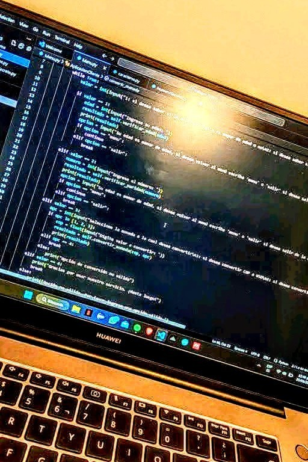
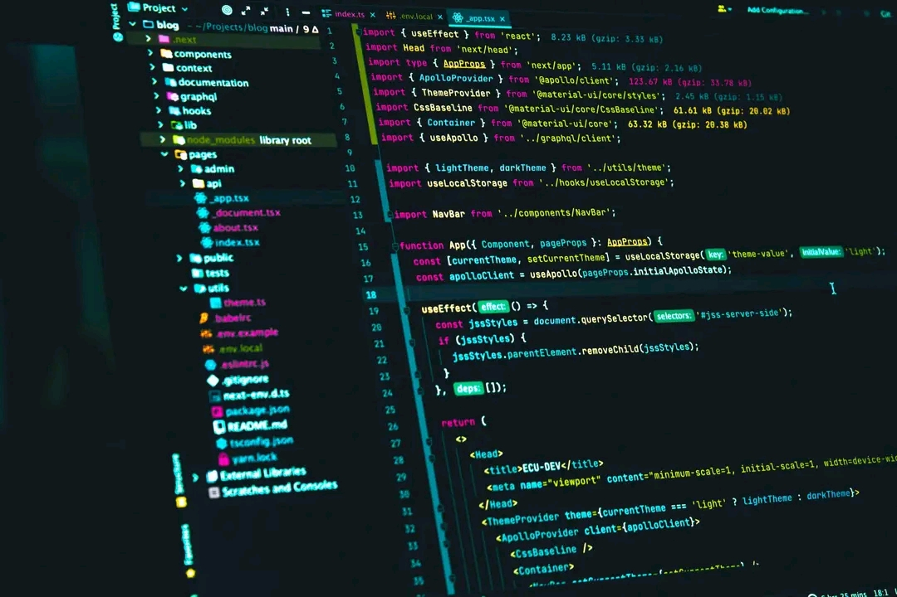

Qui suis-je ?
Je m'appelle KOUGBE ZOGAN Aurras Charnel, nom de code Charnscode, étudiant en 2e année à l’Institut National de l’Eau, spécialité Hydrogéologie. Passionné d’informatique, j'ai suivi des formation en développement web front-end & back-end. Aussi je suis actuellement une formation en cybersécurité ce qui m'aide à faire mon entré dans le mon de la sécurité . Mon objectif : combiner l’eau et la tech pour construire des solutions durables et intelligentes.
Parlant de mes connaissances je maîtrise les outils du developpement web front-end : HTML5, CSS3, Javascript(Niveau intermédiaire) et React.js(toujours en formation) . Concernant le back end, je maitrise Python,Php.
Mes Articles
Voici trois articles que je partage avec vous aujourd'hui notament sur la programmation informatique, le développement web et la cybersécurité :

Article 1 : La programmation informatique, un monde en constante évolution.
La programmation informatique est un domaine en constante évolution qui a révolutionné la façon dont nous vivons, travaillons et communiquons. Les programmeurs informatiques créent des logiciels, des applications et des systèmes qui permettent aux ordinateurs de traiter des informations et d'accomplir des tâches spécifiques.
Histoire de la programmation informatique
La programmation informatique a une longue histoire qui remonte à la création des premiers ordinateurs au 19e siècle. Les premiers langages de programmation, tels que le langage machine et l'assembleur, ont été développés dans les années 1940 et 1950. Les langages de programmation de haut niveau, tels que Fortran et COBOL, ont été développés dans les années 1950 et 1960.
Les langages de programmation
Les langages de programmation sont les outils que les programmeurs utilisent pour écrire du code. Il existe de nombreux langages de programmation différents, chacun avec ses propres caractéristiques et utilisations. Les langages de programmation les plus populaires incluent :
- Python : un langage de programmation de haut niveau qui est utilisé pour développer des applications web, des jeux et des logiciels scientifiques.
- Java : un langage de programmation orienté objet qui est utilisé pour développer des applications Android, des applications web et des logiciels d'entreprise.
- C++ : un langage de programmation de bas niveau qui est utilisé pour développer des systèmes d'exploitation, des jeux et des applications qui nécessitent une grande performance.
- JavaScript : un langage de programmation qui est utilisé pour développer des applications web interactives et des jeux.
- Les outils de programmation
Les outils de programmation sont des logiciels qui aident les programmeurs à écrire, déboguer et tester leur code. Les outils de programmation les plus populaires incluent :
- Les éditeurs de code : des logiciels qui permettent aux programmeurs d'écrire et de modifier du code.
- Les compilateurs : des logiciels qui traduisent le code source en code machine que l'ordinateur peut exécuter.
- Les débogueurs : des logiciels qui aident les programmeurs à trouver et à corriger les erreurs dans leur code.
- Les applications de la programmation informatique
La programmation informatique a de nombreuses applications dans différents domaines, notamment :
-
Le développement web : les programmeurs web créent des sites web et des applications web qui permettent aux utilisateurs d'accéder à des informations et de réaliser des tâches en ligne.
-
Le développement de jeux : les programmeurs de jeux créent des jeux vidéo qui peuvent être joués sur des ordinateurs, des consoles de jeux ou des appareils mobiles.
- La science et l'ingénierie : les programmeurs scientifiques et ingénieurs créent des logiciels et des applications qui permettent de simuler des phénomènes physiques, de modéliser des systèmes complexes et de traiter des données scientifiques.
La programmation informatique est un domaine en constante évolution qui offre de nombreuses opportunités pour les programmeurs et les développeurs. Les langages de programmation, les outils de programmation et les applications de la programmation informatique sont en constante évolution, ce qui nécessite que les programmeurs soient toujours à jour avec les dernières technologies et tendances.
Lire plus
Charns code, 09 Juillet 2025

Article 2 : Le développement web : créer des expériences en ligne engageantes
Le développement web est le processus de création de sites web et d'applications web qui permettent aux utilisateurs d'accéder à des informations et de réaliser des tâches en ligne. Les développeurs web utilisent des langages de programmation tels que HTML, CSS et JavaScript pour créer des sites web et des applications web qui sont à la fois fonctionnels et esthétiques.
Les langages de développement web
Les langages de développement web sont les outils que les développeurs web utilisent pour créer des sites web et des applications web. Les langages de développement web les plus populaires incluent :
- HTML (Hypertext Markup Language) : un langage de balisage qui est utilisé pour définir la structure et le contenu des pages web.
- CSS (Cascading Style Sheets) : un langage de feuille de style qui est utilisé pour contrôler la mise en page et l'apparence visuelle des pages web.
- JavaScript : un langage de programmation qui est utilisé pour ajouter de l'interactivité aux pages web et pour créer des applications web dynamiques.
Les frameworks et les bibliothèques de développement web
Les frameworks et les bibliothèques de développement web sont des outils qui aident les développeurs web à créer des sites web et des applications web plus rapidement et plus efficacement. Les frameworks et les bibliothèques de développement web les plus populaires incluent :
- React : un framework JavaScript qui est utilisé pour créer des applications web interactives et des composants réutilisables.
- Angular : un framework JavaScript qui est utilisé pour créer des applications web complexes et des applications d'entreprise.
- Vue.js : un framework JavaScript qui est utilisé pour créer des applications.
Personellement, je ne maitrise pas encore tout ces framework. C'est pour cela que j' apprends jour et nuit pour avoir un bon niveau.
Les outils de développement web
Les outils de développement web sont des logiciels qui aident les développeurs web à créer, déboguer et tester leurs sites web et applications web. Les outils de développement web les plus populaires incluent :
- Les éditeurs de code : des logiciels qui permettent aux développeurs web d'écrire et de modifier du code.
- Les navigateurs web : des logiciels qui permettent aux utilisateurs d'accéder à des sites web et d'applications web.
- Les outils de débogage : des logiciels qui aident les développeurs web à trouver et à corriger les erreurs dans leur code.
Les applications du développement web
Le développement web a de nombreuses applications dans différents domaines, notamment :
- Le commerce électronique : les développeurs web créent des sites web de commerce électronique qui permettent aux utilisateurs d'acheter des produits et des services en ligne.
- Les réseaux sociaux : les développeurs web créent des applications web de réseaux sociaux qui permettent aux utilisateurs de se connecter et de partager des informations.
- Les applications web mobiles : les développeurs web créent des applications web qui peuvent être utilisées sur des appareils mobiles.
Les tendances du développement web
Le développement web est un domaine en constante évolution, et il y a plusieurs tendances qui émergent actuellement, notamment :
- L'utilisation de l'intelligence artificielle et de l'apprentissage automatique pour améliorer l'expérience utilisateur.
- L'utilisation de la réalité virtuelle et de la réalité augmentée pour créer des expériences immersives.
- L'importance de la sécurité et de la confidentialité des données pour protéger les utilisateurs.
Le développement web est un domaine passionnant qui offre de nombreuses opportunités pour les développeurs web et les entreprises. Les langages de développement web, les frameworks et les bibliothèques, les outils de développement web et les applications du développement web sont en constante évolution, ce qui nécessite que les développeurs web soient toujours à jour avec les dernières technologies et tendances.
Charns code, 10 Juillet 2025
Article 3 : La cybersécurité : protéger les données et les systèmes informatiques
La cybersécurité est un domaine qui consiste à protéger les données et les systèmes informatiques contre les menaces de sécurité telles que les pirates informatiques, les virus et les attaques de phishing. Les professionnels de la cybersécurité utilisent des outils et des techniques pour protéger les réseaux et les systèmes informatiques.
Les menaces de cybersécurité
Les menaces de cybersécurité sont nombreuses et variées, notamment :
- Les pirates informatiques : des individus qui utilisent des techniques pour accéder à des systèmes informatiques sans autorisation.
- Les virus : des logiciels malveillants qui peuvent endommager des systèmes informatiques et des données.
- Les attaques de phishing : des attaques qui visent à tromper les utilisateurs pour obtenir des informations sensibles.
Les outils de cybersécurité
Les outils de cybersécurité sont des logiciels et des matériels qui aident à protéger les données et les systèmes informatiques, notamment :
- Les pare-feu : des logiciels qui contrôlent l'accès aux réseaux et aux systèmes informatiques.
- Les antivirus : des logiciels qui détectent et suppriment les virus et les logiciels malveillants.
- Les systèmes de détection d'intrusion : des logiciels qui détectent les attaques et les intrusions dans les systèmes informatiques.
Les applications de la cybersécurité
La cybersécurité a de nombreuses applications dans différents domaines, notamment :
- La protection des données sensibles : les professionnels de la cybersécurité protègent les données sensibles telles que les informations financières et les données personnelles.
- La protection des systèmes informatiques : les professionnels de la cybersécurité protègent les systèmes informatiques contre les attaques et les intrusions.
- La formation et la sensibilisation : les professionnels de la cybersécurité forment les utilisateurs sur les meilleures pratiques de sécurité et les risques de cybersécurité.
Les tendances de la cybersécurité
La cybersécurité est un domaine en constante évolution, et il y a plusieurs tendances qui émergent actuellement, notamment :
- L'utilisation de l'intelligence artificielle et de l'apprentissage automatique pour détecter et prévenir les attaques.
- L'importance de la sécurité des données dans le cloud et les systèmes distribués.
- La nécessité de former les utilisateurs sur les meilleures pratiques de sécurité et les risques de cybersécurité.
La cybersécurité est un domaine essentiel pour protéger les données et les systèmes informatiques contre les menaces de sécurité. Les professionnels de la cybersécurité utilisent des outils et des techniques pour protéger les réseaux et les systèmes informatiques, et il est important de rester à jour avec les dernières tendances et technologies pour rester en sécurité.
Charns code, 11 Juillet 2025